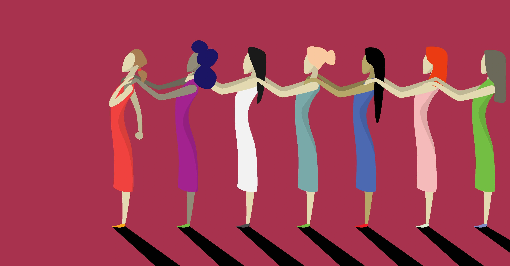
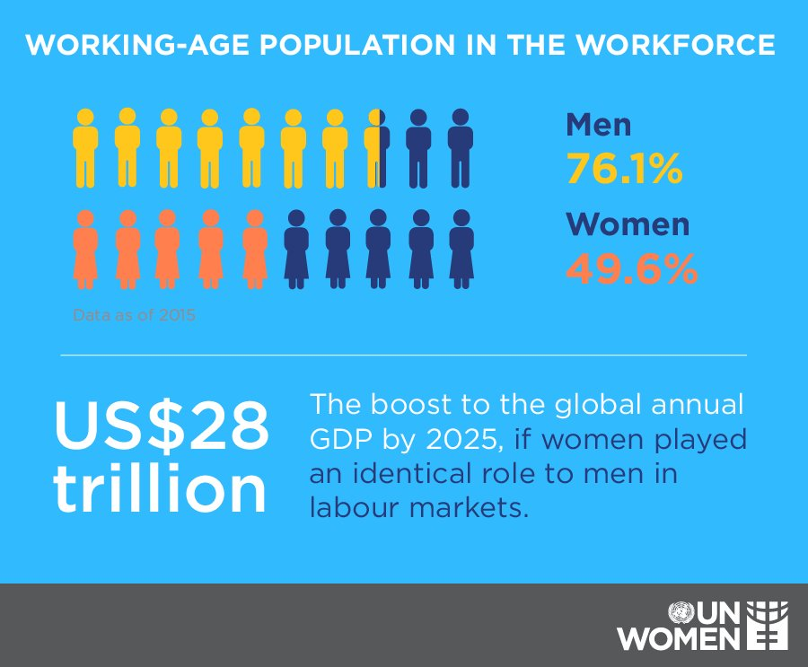

Potential/Impact
Understanding the impacts of gender inequality in the US is crucial because it can limit the talent pool, hinder economic growth, perpetuate poverty, and exacerbate social inequalities.
Palestine
The ongoing conflict has led to an increase in violence against women. However, efforts had been made to address this issue, such as the establishment of shelters for women victims of violence and awareness-raising campaigns to challenge cultural attitudes that perpetuate violence against women.
New York
LOWER GDP: Gender inequality in job opportunities can lead to a reduction in the Gross Domestic Product(GDP) of a country or state. According to a report by the McKinsey Global Institute, closing the gender gap in the labor force
In General
MISSED POTENTIAL: Gender inequality in job opportunities means that societies are not making the most of the talents and skills of half of their population.